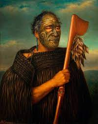

220. Tamati Waka Nene. Gottfried Lindauer. 1890 CE Oil on canvas
- Content
- New zealand painter: Famous for portraits of Maori chieftains
- Journeyman painter-tradesman who worked on commission
- The subject is Tamati Waka Nene (1780-1871)
- He was a maori Chief and converted to the wesleyan faith
- Painting is posthumous, based on a photograph by John Crombie
- emphasis placed on symbols of rank/status:
- elaborate tattooing
- staff with an eye in the center
- feathers dangling from staff